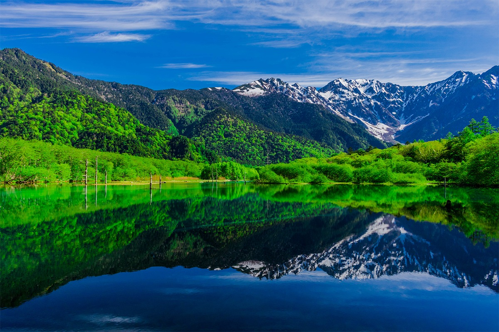
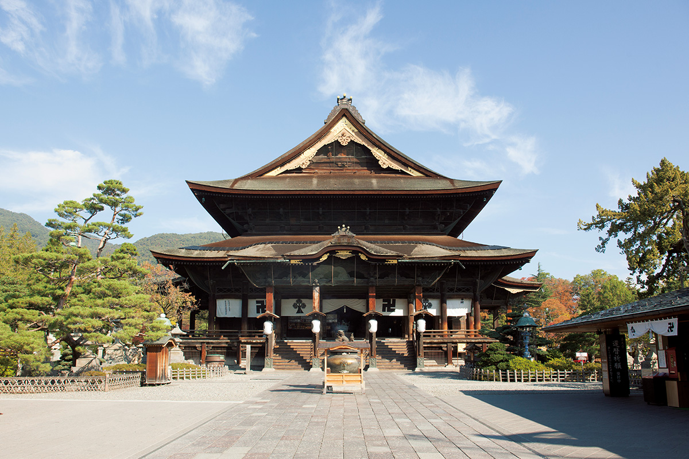
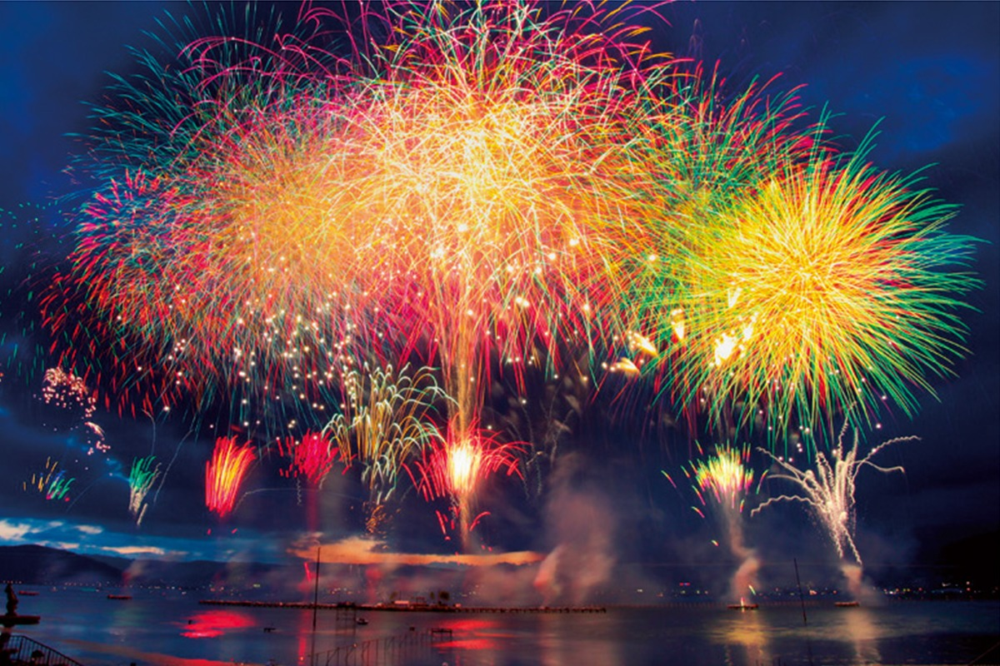
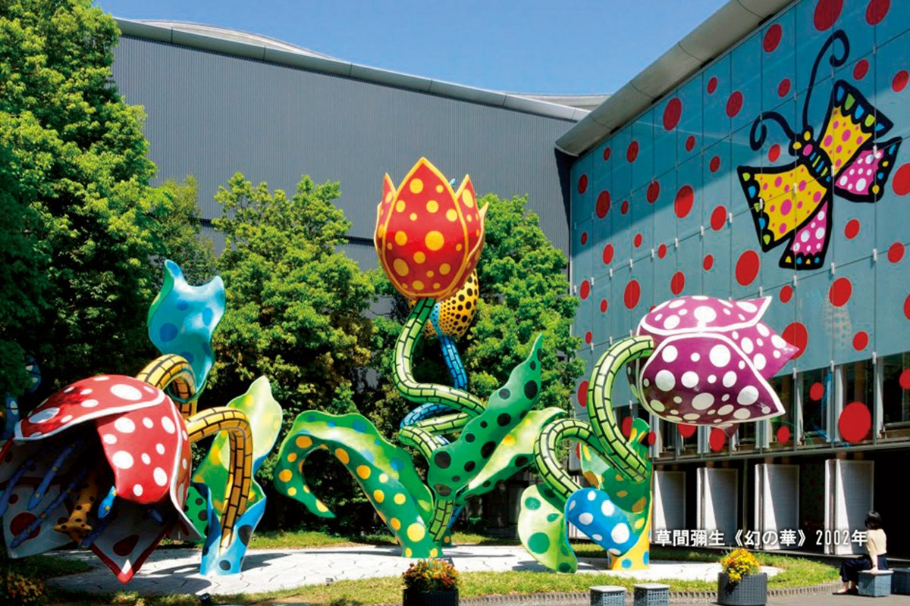
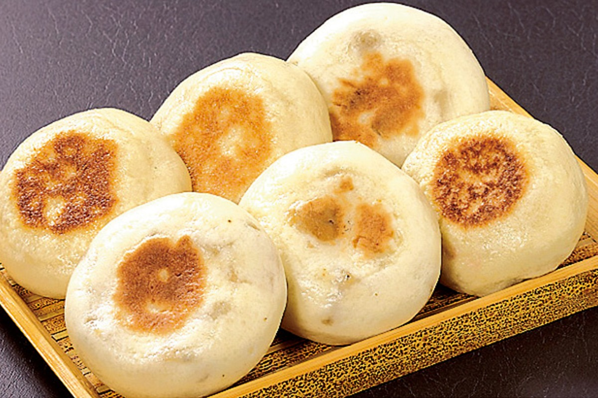
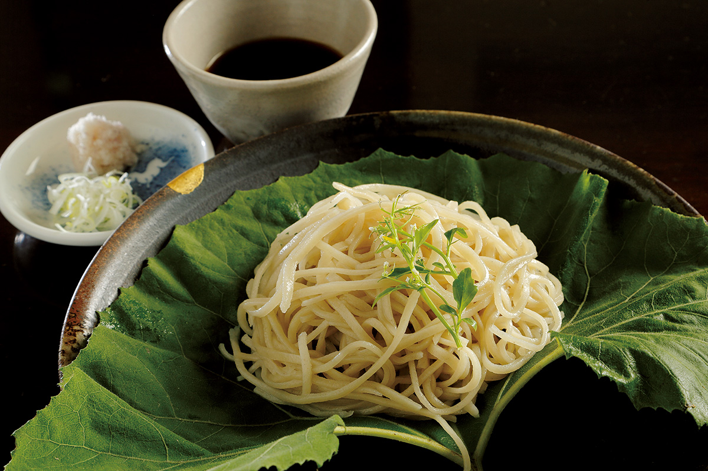
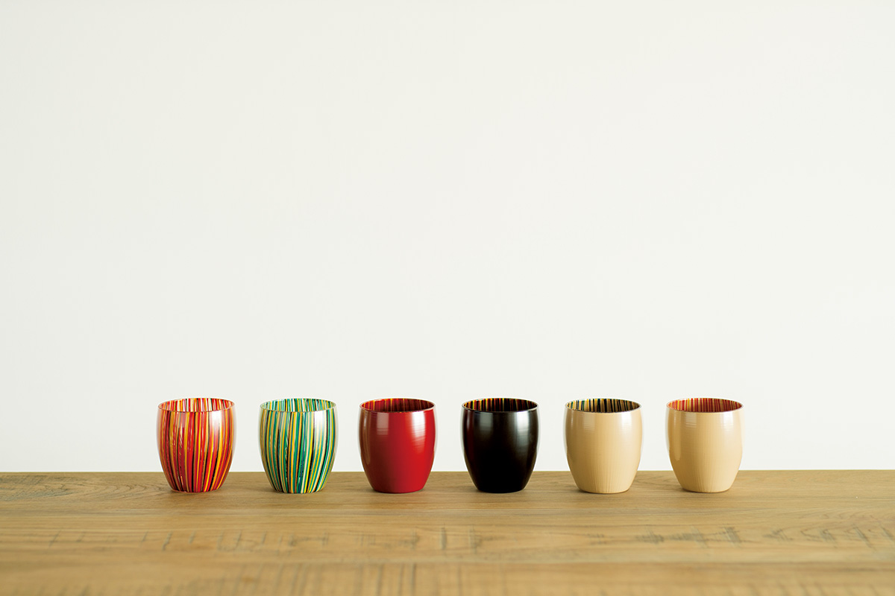
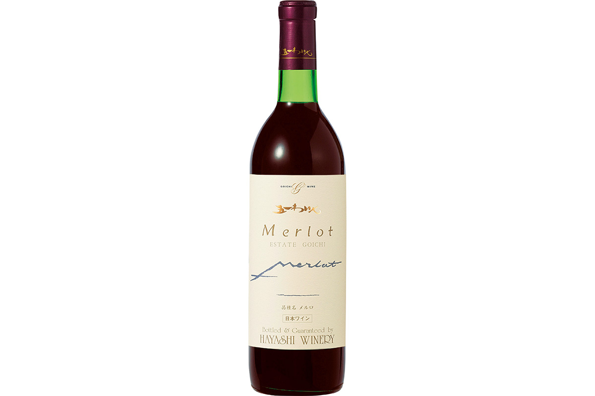
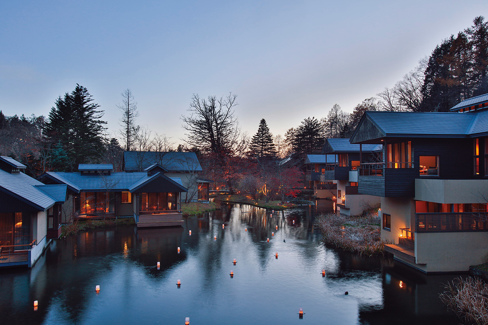

Префектура Нагано
Нагано: крыша Японии и вода с её гор

Горное озеро в долине, в воде отражаются хребты со снежниками, вокруг леса
Горы выше трёх тысяч метров, восемь крупных рек, которые начинаются у подножия вершин, снежные курорты зимой и прохлада летом. Рассказываем, за чем ехать в префектуру Нагано, которую в Японии зовут крышей страны.
Карта: 100 мест из 42 статей · все статьи о префектуре Нагано
Карта
Нагано на карте
100 мест из наших статей о префектуре Нагано: отели и рестораны Каруидзавы, онсэн Асама и сладости Мацумото, Обусэ, Хакуба и Нодзава онсэн, вино долины Тикума, Татэсина и плато Яцугатакэ, род Санада. Нажмите на точку, чтобы открыть статью.
Пунктирный круг означает, что точка примерная: место находится в этом районе или на этом острове.
О префектуре
Край, который называют крышей Японии
Нагано лежит почти в самом центре острова Хонсю. Когда-то здесь была провинция Синано, которую до сих пор называют Синсю, и делится она на четыре части: северную, восточную, центральную и южную. Со всех сторон префектуру окружают горы: по числу вершин выше трёх тысяч метров и по числу гор из списка ста знаменитых гор Японии Нагано первая в стране. Земля здесь поднята высоко: город Нагано стоит на высоте 362 метра, а Мацумото на 592 метрах. Между хребтами пробивают себе дорогу Тэнгю, Кисо и Тикума, реки первой категории, то есть главные водные артерии страны, а снег с вершин даёт префектуре много чистой воды. Хорошей воды здесь столько, что её источники так и называют: знаменитая вода.
Прохладный климат и большие перепады температур между днём и ночью определили, чем здесь занимаются. В эпоху Мэйдзи и Тайсё, то есть с конца XIX века, префектура жила шелкопрядением, а сегодня её промышленность держится на точном машиностроении. Хорошо идут земледелие и садоводство: здесь собирают много овощей и фруктов, а ещё делают сакэ, вино и пасту мисо, то есть продукты брожения.
Эмблему префектуры сложили из первого слога её названия, и в круглом знаке читаются летящая птица, гора и озеро, в котором эта гора отражается.
Что посмотреть
Храм, которому почти полторы тысячи лет
Дзэнкодзи
История храма Дзэнкодзи насчитывает почти 1400 лет, и это одна из самых старых буддийских обителей страны. Главный образ храма, Амида, по преданию самый древний в Японии, а на территории стоят главный зал, признанный национальным сокровищем, то есть особо ценной реликвией, и множество других памятников.

- Адрес
- 491-i Motoyoshi-machi, Nagano, Nagano
- Справки
- канцелярия храма Дзэнкодзи
- Телефон
- +81 26-234-3591
Что ещё посмотреть
- Ущелье Тэнрю-кё на реке Тэнрю
- Замок Мацумото, чей донжон тоже признан национальным сокровищем
- Парк диких обезьян в Дзигокудани
Праздники
Сорок тысяч залпов над озером Сува
Праздник на озере Сува с фейерверком
Каждый год 15 августа над озером Сува запускают около 40 000 залпов: это один из самых больших фейерверков страны. Над водой раскрываются огненные каскады, а одна из фигур, «Ниагара», растягивается почти на два километра.

- Когда
- ежегодно 15 августа (в 2020 году отменён)
- Место
- озеро Сува, город Сува, префектура Нагано
Другие праздники
- Праздник сакуры в Такато, когда цветение вишни смотрят на фоне гор
- Фестиваль воздушных шаров в Саку
- Летний фейерверк на озере Сиракаба
Музеи и архитектура
Музей, где всё в горошек
Городской музей искусств Мацумото
Здесь показывают работы художников, связанных с Мацумото, и прежде всего Яёи Кусамы, уроженки города, чьи вещи легко узнать по горошинам. У входа стоит её большая скульптура под открытым небом.

- Адрес
- 4-2-22 Chuo, Matsumoto, Nagano
- Телефон
- +81 263-39-7400
Что ещё посмотреть
- Художественный музей на плато Уцукусигахара, где скульптуры стоят прямо среди лугов
- Музей, посвящённый эпохе Дзёмон, древнейшему периоду истории Японии
- Музей художника Сэндзю Хироси в Каруидзаве
Местная кухня
Пирожок с начинкой из местной зелени
Ояки
Ояки это лепёшка из пшеничного теста с начинкой: её и пекут в печи, и готовят на пару. Начинку чаще всего делают из местных продуктов, например из маринованной зелени ноадзава-на, и приправляют довольно остро.

Что ещё попробовать
- Тодзи-соба, лапшу, которую варят вместе с овощами в одном горшке
- Собакаки, густую гречневую массу, которую едят ложкой
- Рисовые пирожные с каштаном
Где поесть
Ресторан, где лапшу делают из одной гречихи
Сёкуни-кан
Рестораном управляет Масакадзу Китадзава, которого в 2010 году выбрали одним из семи лучших поваров страны на первом конкурсе кулинарных мастеров. Здесь варят дзювари-соба, лапшу из одной гречихи, без пшеничной муки, и подают к ней блюда из местных сезонных продуктов.

- Адрес
- 3250-3 Kasuga, Saku, Nagano
- Телефон
- +81 267-52-2010
- Часы
- с 11:30 до 15:00, ужин с 17:00 только по брони
- Выходные
- среда и четверг (в праздники, во время золотой недели, череды праздников в начале мая, и в августе работает)
Ремёсла
Лак на стекле
Лаковые изделия Кисо от мастерской Маруёси Косака
Мастерская делает лаковую посуду в традиции Кисо, но не только из дерева: здесь научились закреплять лак на стеклянной посуде. Так стекло сохраняет свою лёгкость, а цвет и узор остаются яркими и современными.

- Телефон
- +81 264-34-2245
Что привезти
Бутылка вина из Нагано
Вино «Гоити» Эстейт Мерло
Винодельня работает с 1911 года. В этом вине из сорта мерло аромат чёрных ягод и выдержки сливаются в плотный, основательный вкус.

- Цена
- 2768 иен за 720 мл
- Справки
- винодельня Хаяси
- Телефон
- +81 263-52-0059
- Сайт
- goichiwine.co.jp
Где остановиться
Домики в лесу у реки
Хосиноя Каруидзава
Курортный отель спрятан в лесу: отдельные домики стоят вдоль реки и на склоне горы, так что природу здесь чувствуешь в любое время года. Этот отель считают пионером нового подхода к японским курортам, когда само место и его атмосфера становятся брендом.

- Адрес
- Hoshino, Karuizawa, Nagano
- Телефон
- +81 570-073-066 (общее бронирование)
- Номеров
- 77
- Цена
- от 84 000 иен за номер в сутки без налога и сервисного сбора, питание не включено
Местный диалект
Как здесь хвалят еду и просят сбегать за покупкой
- Эрээ умээнааНу очень вкусно
- ОйдэнаситэДобро пожаловать, заходите
- Тётто соко мадэ тондэкитэ!Сбегай быстренько туда!
- Сёдзи га цумойи нааПерегородка сёдзи плохо скользит по пазу
Рекорды
Первые в стране по голубике, фейерверкам и гитарам
- №1 по сбору голубики
- №1 по производству фейерверков
- №1 по выпуску гитар
Вопросы и ответы
Два вопроса о Нагано
Художница из Мацумото, которую узнают по узору из горошин, это кто?
Яёи Кусама, одна из главных художниц японского авангарда: её картины, скульптуры и целые комнаты построены на горошинах. Она занималась также дизайном одежды и писала романы, а в 2016 году получила орден Культуры.
Какой курорт с горячими источниками дал имя местной зелени?
Ноадзава-онсэн. Есть версия, что источник открыл монах Гёки (668–749), проповедник эпохи Нара, который строил храмы и дороги и помогал простым людям. В эпоху Эдо настоятель местного храма привёз из Киото семена репы, которую там выращивали. В местном климате репа изменилась, и так появилась ноадзава-на, листовая зелень, которую здесь солят и маринуют.
Справочник
Нагано в цифрах
Общие данные
| Административный центр | Нагано |
| Муниципалитеты | 19 городов, 23 посёлка и 35 сёл |
| Площадь | 13 562 км² |
| Население | 2,06 млн человек |
| Плотность населения | 152,1 чел./км² |
| Туристов в год | 30,82 млн |
| Символ-дерево | берёза |
| Символ-цветок | горечавка |
| Символ-птица | белая куропатка |
Климат
| Средняя годовая температура | 13,0 °C |
| Средний максимум | 32,8 °C |
| Средний минимум | -4,6 °C |
| Осадки | 886 мм в год |
| Ясных дней | 21 |
| Дней с осадками | 110 |
| Дней со снегом | 73 |
Для путешественника
| Горячих источников | 214 |
| Отелей и рёканов | 2750 |
| Художественных музеев | 106 |
| Музеев | 263 |
| Придорожных станций митиноэки | 52 |
| Объектов культурного наследия | 189, из них 10 национальных сокровищ |
| Национальные сокровища | главный зал храма Дзэнкодзи, донжон замка Мацумото, старое здание школы Кайти и другие |
| Исторических памятников | 38 |
| Живописных мест | 6 |
| Памятников природы | 25 |
| Национальные и квазинациональные парки | Дзёсинэцу Когэн, Мёко Тогакуси Рэндзан, Тюбу Сангаку, Титибу Тама Каи и другие, всего 8 |
Природные памятники
Летяга, шарики известняка у источника Сирахо и большая криптомерия в Цукисэ и другие природные памятники.
Наши статьи
Все статьи о префектуре Нагано
Каруидзава
- HOSHINOYA Karuizawa: деревня в долине, где начиналась Hoshino Resorts, и два разных ужина
- Два Fufu в Каруидзаве: солнечный курорт у вулкана Асама и дом с камином в лесу
- Каруидзава за столом: шеф Bocuse d’Or, баскский трёхзвёздочный повар и ученик Noma
- YO-HO BREWING: пивоварня из Каруидзавы, где варят YONA YONA ALE
- Три дня с сакэ в HOSHINOYA Karuizawa: ванна, ужин в номере и дегустация из Саку
- Hiroshi Senju Museum Karuizawa: водопады Хироси Сэндзю в стеклянном здании Рюэ Нисидзавы
- SHISHI-IWA-HOUSE: три дома двух лауреатов Притцкеровской премии в лесу Каруидзавы
- Mampei Hotel и бывший отель «Микаса»: яблочный пирог Джона Леннона и две старые гостиницы
Мацумото
- Matsumoto Jujo: онсэн Асама, огонь ресторана «367» и мисо из деревянных бочек
- Рёкан «Сугимото» в Мацумото: соба от хозяина, сакэ и джаз
- Hikariya Nishi: французская кухня из овощей Мацумото в купеческом амбаре 1887 года
- Myojinkan: горный рёкан под Мацумото, где купаются стоя над долиной
- Satoyama villa Honjin: ночь в доме, где отдыхали князья Мацумото
- Мацумото ради завтрака: четыре дня с шефом, который ищет вкус в дороге
- ALPS COFFEE LAB в Мацумото: кофе с васаби, мисо и яблоками Синсю
- Городской музей Мацумото: новый дом у замка, где начинается знакомство с городом
- Сладости Мацумото: пять угощений дома «Кайундо» и тянутая карамель «Иидая амэтэн»
- KAI Alps и KAI Matsumoto: деревенский онсэн у Северных Альп и сутки «современного тодзи»
Север: Обусэ, Нагано, Тогакуси
- «Сакураи Кансэйдо» в Обусэ: ракуган для паломников и каштаны в банках
- Амэ-но Тадзикарао: бог-силач, который пинком отправил дверь небесной пещеры до самого Тогакуси
- Мисо из деревянных бочек: мисоварня Koujiya Hondo Jyozoho в Судзаке, где с 1869 года сами растят кодзи
- Префектурный художественный музей Нагано: музей-пейзаж по соседству с храмом Дзэнко-дзи
- The Sauna у озера Нодзири: финская парная в лесах Нагано
Хакуба и Омати
Нодзава, Сига Когэн, Иияма
Вино и Тикума
- Вино Нагано: винодельни долины реки Тикума и пять винных долин префектуры
- Поезд «Рокумон»: классические вагоны Shinano Railway по мотивам рода Санада
- Юкимура Санада: тихий самурай из Синано, которого уважал даже Иэясу Токугава
- Масанори Фукусима: буйный полководец Хидэёси, который закончил жизнь в горах Синано
Татэсина, Тино, Venus Line
- Tateshina Shinyu Onsen: рёкан в Татэсине с библиотекой на 30 000 книг и ваннами у горной реки
- TINY GARDEN Tateshina: лодж, домики и палатки на берегу горного озера
- Auberge Espoir в Татэсине: дичь Синсю на тарелке шефа французской кухни
- «Кодомари Fuji»: гостиница Тэрунобу Фудзимори, которую строят гости и природа
- Venus Line: горная дорога над лугами Синсю